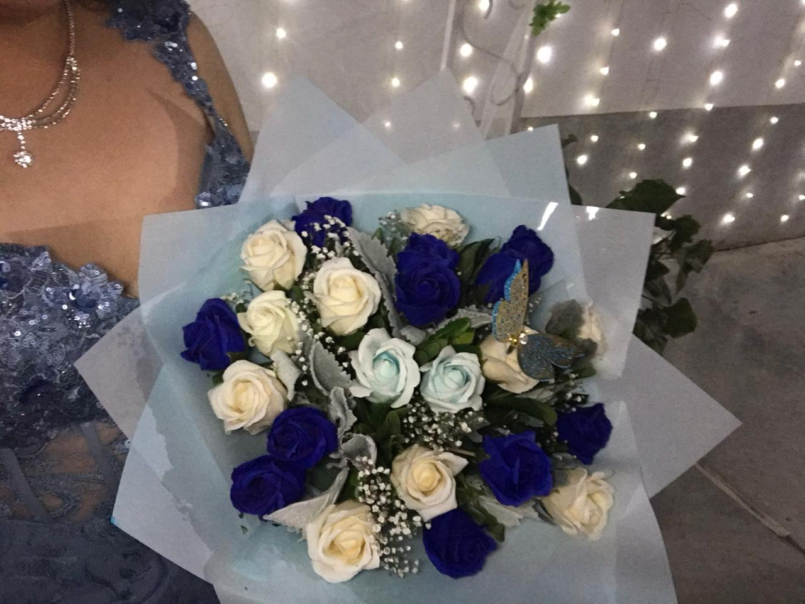
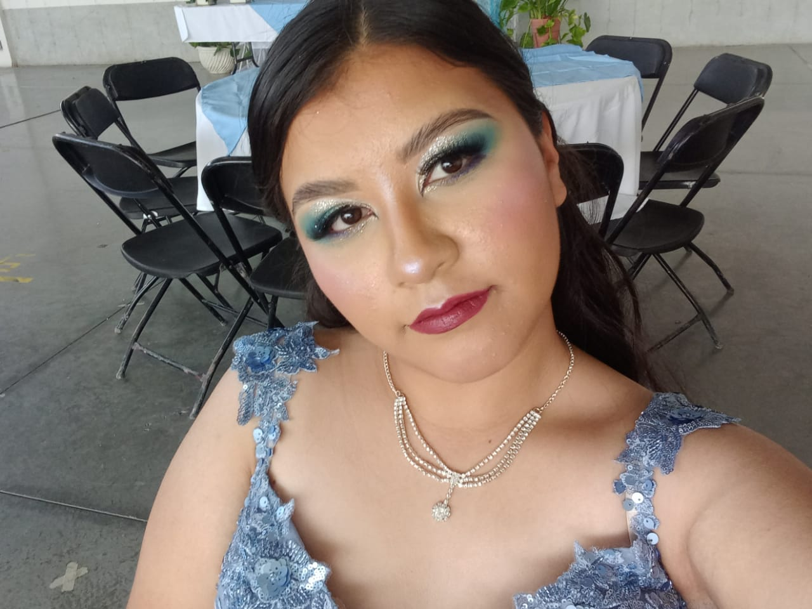

Mi nombre es Viridiana Gómez Gamiño, tengo 15 años y soy estudiante del Bachillerato de Jesús del Monte. Nací el 21 de octubre del 2009 y soy la hermana mayor de tres; tengo dos hermanos con quienes me encanta pasar tiempo en familia. Desde pequeña he sido una chica tranquila, amable e introvertida, y a lo largo de mi vida me he esforzado por ser responsable en todo lo que hago. En la escuela siempre trato de dar lo mejor de mí, sobre todo cuando se trata de trabajos en equipo o tareas importantes, porque me gusta ver cómo mis calificaciones mejoran gracias a mi esfuerzo y dedicación.
Soy una persona de pocos amigos, pero las amistades que tengo son muy valiosas para mí. Actualmente tengo dos amigas con las que comparto momentos especiales y con quienes me siento cómoda. En mis tiempos libres, disfruto mucho estar en casa y compartir tiempo con mis padres y hermanos; esos momentos se vuelven recuerdos muy especiales, especialmente cuando salimos juntos a pasear. Me gusta mucho observar la naturaleza, salir a caminar o simplemente admirar mi entorno, porque siempre encuentro cosas interesantes a mi alrededor.
Otra de las cosas que disfruto es hacer ejercicio de vez en cuando. Me ayuda a despejar mi mente y a sentirme más activa. También me encanta ver K-dramas cuando tengo tiempo libre. Uno de mis pasatiempos favoritos es escuchar música. ya sea mientras hago tareas, limpio mi cuarto o simplemente me relajo, pues se ha vuelto un habito para mi.
Una de las metas que tengo es terminar la preparatoria, elegir una buena carrera y entrar a la universidad. Sé que el camino no siempre es fácil, pero tengo la seguridad de que mi esfuerzo se transformará en un buen trabajo, y con ello podré apoyar a mis padres Me considero una persona intuitiva, enfocada y con metas claras.